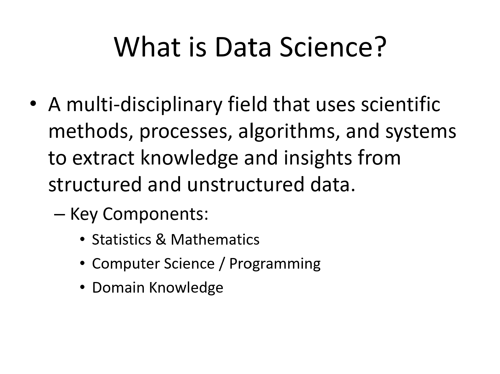
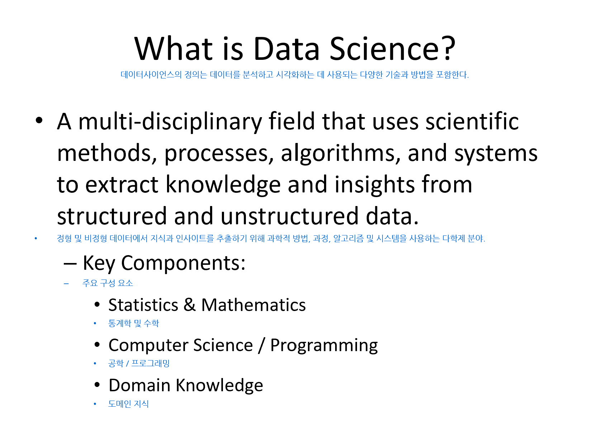

영문 강의자료 넣으면
한국어 강의자료 자동 생성
Windows 10 이상 · 최초 실행 시 AI 모델 자동 설치 · 다른 버전 보기
Windows 설치파일(.exe)은 Windows 전용입니다.
macOS · Linux 사용자는 아래 소스코드 실행 방법을 이용해 주세요.
모든 번역이 내 PC 안에서만 이루어집니다. 강의 자료가 외부 서버로 전송되지 않아요.
컴퓨터공학, 간호학, 경영학 등 30개 이상의 전공 용어 사전을 기반으로 정확하게 번역합니다.
강의 슬라이드(PPTX)와 PDF 모두 지원합니다. 원본 레이아웃을 그대로 유지하며 번역문을 추가합니다.
교수님이 즐겨 쓰는 표현이나 과목 특화 용어를 직접 추가해 더 정확한 번역을 만들 수 있어요.
경량 AI 모델(3B)을 사용해 일반 노트북에서도 슬라이드 한 장을 수초 내에 번역합니다.
파일 첫 페이지를 분석해 전공을 자동으로 추론합니다. 따로 설정할 필요 없어요.
▲ 실제 싹싹번역 사용 화면 (1분 데모)
아래 다운로드 버튼을 누르고, 원하는 폴더에 압축을 풀어주세요.
폴더 안의 싹싹번역.exe를 더블클릭하세요. 최초 실행 시 AI 엔진(Ollama)과 번역 모델이 자동으로 설치됩니다. 약 15~20분 소요됩니다.
* 미리 Ollama를 다운로드 받아둘 시 더 빠른 설치가 가능합니다.
* 컴퓨터 사양에 따라 설치 시간은 달라질 수 있습니다.
PDF 또는 PPTX 파일을 업로드하고 번역 시작 버튼을 누르면 됩니다. 번역된 파일은 Downloads 폴더에 자동 저장됩니다.
최초 설치가 완료된 이후엔 실행 즉시 앱이 열립니다.


▲ 원본 레이아웃을 유지한 채 한국어 번역이 추가됩니다.
Meta 개발의 경량 3B 모델. 일반 노트북에서도 빠른 속도로 학술 한국어 번역이 가능합니다. Llama Community License 기반으로 상업적 사용도 가능합니다.
싹싹번역는 완전히 오프라인에서 작동합니다.
업로드한 강의자료, 번역 결과 모두 내 PC 안에서만 처리되며
어떤 서버로도 전송되지 않습니다.